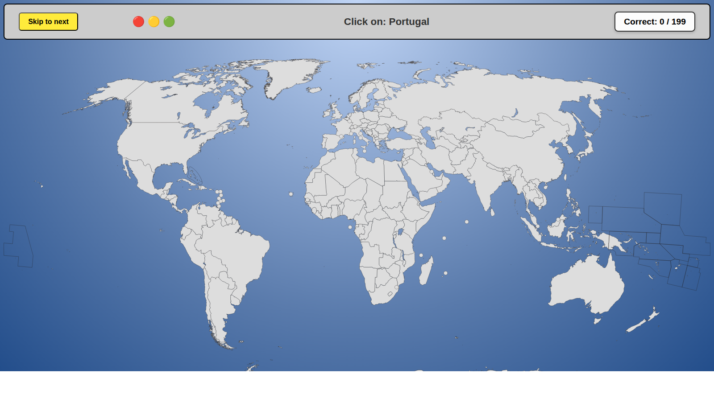

Live Web App · geo412.comGeo 412: World Geography Trivia
A type-in trivia game that helps cadets commit the countries of the world, and their geographic combatant commands, to memory
Built for United States Air Force Academy cadets · Texas State University
Geo 412 is a browser game I built with Claude Code to help my undergraduate students learn the countries of the world. Named for the geography course it supports at the U.S. Air Force Academy, it is especially effective for future military officers: the type-in trivia format drills which country falls under which geographic combatant command until the map sticks.
More about this work
Flashcards and slides do not make world geography stick, and the test format rewards short-term memorization over real geographic intuition. Geo 412 turns the problem into a game. Players are prompted with a country and must type the answer or find it on the world map, get instant feedback, and work through all of the countries in short, self-paced sessions. Because the answers are organized by geographic combatant command, cadets learn the operational geography they will actually be tested on and use as officers.
The game is a hand-built front end in JavaScript, HTML, and CSS with an interactive SVG world map, developed with AI-assisted coding in Claude Code, version-controlled on GitHub, and deployed to Microsoft Azure at its own domain. It is live and in use in the classroom, and it also supports my doctoral research into how AI can help educators design learning aids and effective teaching tools.
The first version of the game, a click-the-country map quiz, is open source on GitHub under the MIT License.